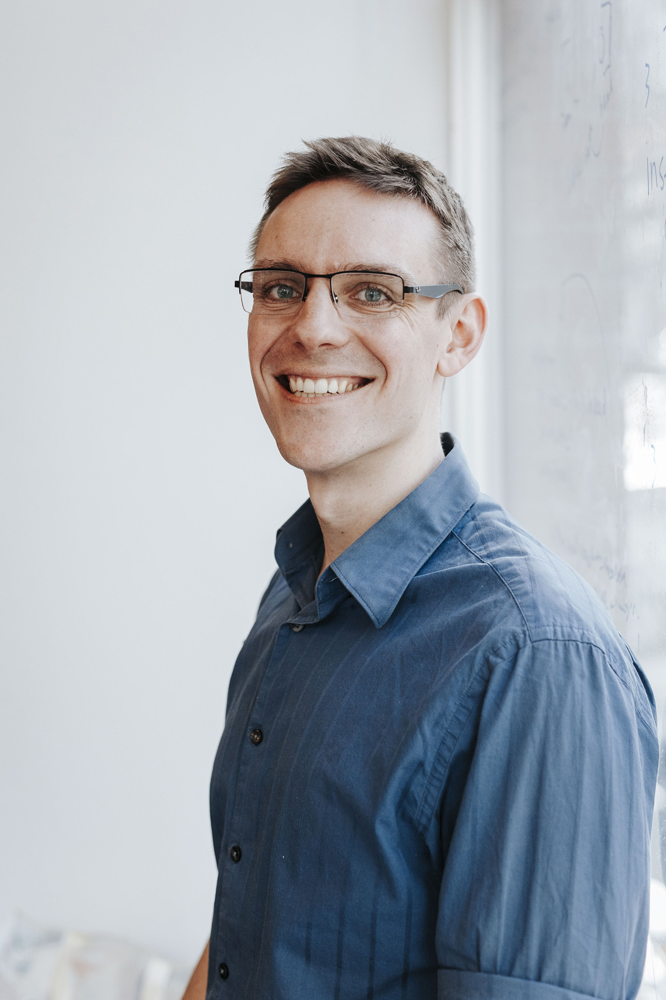

by
Hello! My name is Dan. I'm a full-stack software engineer. I'm passionate about combining technical skill and interpersonal connections to create beautiful and innovative digital products. I believe that meaningful relationships lead to positive results. As such, I seek to invest in people as much as in the technologies we use.
A bit about me...
My unusual background has provided me a range of experiences that help shape who I am. As a student of Anthropology I learned how perspectives vary and hugely differentiate the way we understand the world around us. Throughout my life I strive to keep a perspectives based approach to problem solving and relationship building, believing that the first step to success is understanding others as best we can.
I've opened two successful businesses abroad in Quito, Ecuador. Being a co-owner and founder of Community Hostel and Bandido Brewing taught me how to take ideas and turn them into reality. The challenges of opening two businesses in a foreign country taught me the value of adaptability. With a mindset of adaptability, any problem is solvable, any issue or interruption is merely a part of the process. To this day my adaptability remains one of my greatest strengths.
A portfolio showcasing my work is currently in development.
For now, please feel free to learn more about me on...